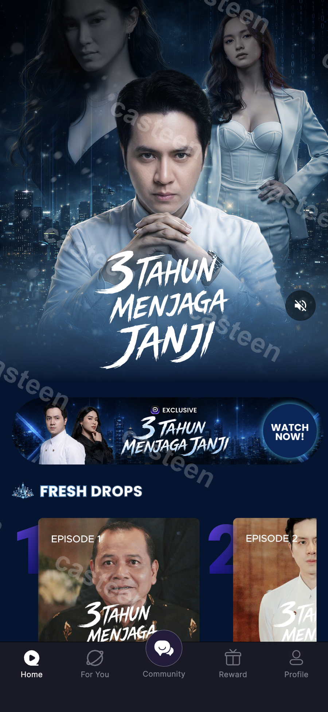
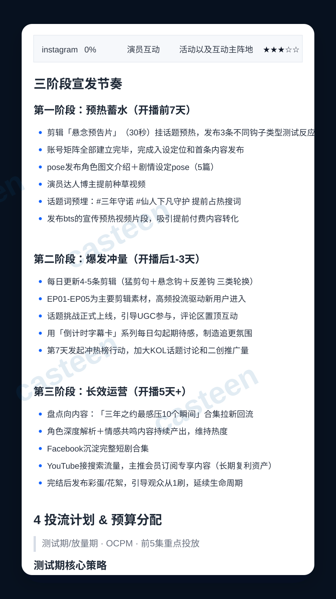

01整合营销 · 短剧宣发
《三年之约》
上线整合营销
一部短剧，如何从开播前的期待，走向上线后的持续讨论？用内容矩阵、达人合作与社群互动，串起完整宣发节奏。
预热蓄水→上线传播→长效运营
查看方案与案例
营销方案 / 内容节奏 / 渠道协同


DOPREEL INDONESIA 让故事走出屏幕。CONTENT · MARKETING · GROWTH
我是李二虎，在印尼做内容与数字营销。这里记录我如何把市场洞察变成内容，再把内容带到用户面前。
进入账号 · 观看作品 · 了解内容背后的故事
移入即播 · 点击有声观看 · 下方聊聊幕后
从洞察、策划到内容呈现
01整合营销 · 短剧宣发
一部短剧，如何从开播前的期待，走向上线后的持续讨论？用内容矩阵、达人合作与社群互动，串起完整宣发节奏。
营销方案 / 内容节奏 / 渠道协同


DOPREEL INDONESIA 让故事走出屏幕。内容之外，也探索更好的工作方式
从直播背景、影片提示词，到日报与封面运营，探索 AI 在内容工作中的实际用法。
直播场景视觉与背景素材制作。
整理影片创意与镜头提示词，沉淀可复用的写作 Skills。
汇总广告数据与核心指标，自动分发日报、周报。
将 AI 封面创作与 YouTube 内容运营结合。
用真实镜头记录人物、产品与故事。从创意短片到产品视频，让想法在画面里落地。

期待和你合作
我关注内容如何跨越文化、找到受众，并带来实际行动。做过短剧出海、社媒内容、广告投放与 TikTok 电商，也持续尝试用 AI 和自动化改善内容工作流。
经历：DopReel / 网易有道 / 好未来 · 网络与新媒体专业
查看我的简历下一件作品，或许可以一起完成。
01 / 整合营销 · 印尼短剧
围绕短剧上线，把内容、达人与社群组织成一套连续的传播动作。
通过悬念预告、角色介绍和幕后花絮建立期待，提前安排账号矩阵与达人内容。
围绕重点剧集轮换内容钩子，联动话题、评论区互动和 UGC，把观看兴趣延伸为讨论。
通过剧情盘点、角色解析、合集与花絮延续内容生命周期，承接搜索和回流观看。
02 / 市场洞察 · 内容本地化
从用户愿意停留的情节出发，观察题材、冲突密度与付费节奏之间的关系。
这份观察把内容判断拆成开头方式、冲突呈现、情绪刺激、爽点兑现和付费钩子。重点是提炼可供选题和素材测试使用的观察维度。
以下为内容观察与判断框架，具体结论需要结合后续素材测试验证。
03 / 内容视觉 · 页面设计
把角色、故事与观看入口组织在同一个页面，让用户顺着内容兴趣继续探索。
首屏用人物关系和剧名建立识别；中部用明确的观看按钮承接兴趣；剧集卡片继续提供具体内容入口。页面围绕用户的观看路径组织信息。